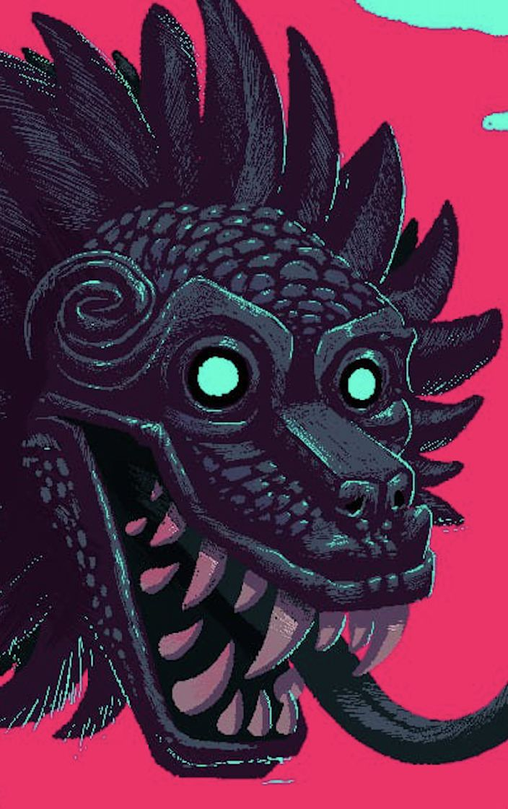
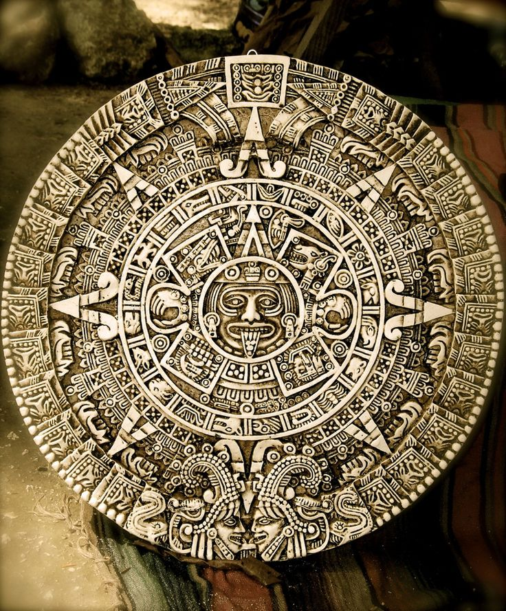

La Mitologia Maya

La mitología Maya es un sistema complejo de creencias y narrativas que formaban parte de la cultura de los antiguos mayas, una civilización mesoamericana que floreció en lo que ahora es México y América Central, especialmente en regiones como Guatemala, Honduras y Belice. Aquí hay algunos aspectos clave de la mitología Maya:
Cosmovisión: La mitología Maya ofrecía una explicación del universo y la naturaleza, centrándose en la interacción entre los dioses, los seres humanos y el mundo natural. Creían en múltiples dioses y espíritus que controlaban los fenómenos naturales y tenían influencia sobre la vida cotidiana.
Dioses Mayas: Los mayas adoraban a una amplia variedad de dioses, cada uno asociado con diferentes aspectos de la vida y la naturaleza. Por ejemplo, Itzamná era el dios del cielo y el creador del mundo, mientras que Kukulcán (equivalente a Quetzalcóatl en la mitología azteca) era el dios de la serpiente emplumada, asociado con el viento, el agua y la sabiduría.

Mitología de la Creación: Los mayas tenían varias narrativas sobre el origen del mundo y la humanidad. Una de las más conocidas es el Popol Vuh, un antiguo texto que relata la creación del mundo, la formación de los primeros seres humanos y las interacciones entre los dioses y los humanos.
Prácticas Religiosas: La religión y la mitología maya estaban estrechamente relacionadas con la vida cotidiana y las actividades rituales, como las ceremonias religiosas, los sacrificios y los rituales agrícolas. Estas prácticas eran fundamentales para mantener el equilibrio entre el mundo natural y el sobrenatural.
Legado y Supervivencia: Aunque la civilización maya clásica desapareció en el siglo IX d.C., muchas de sus tradiciones mitológicas y religiosas persistieron en las culturas posteriores de la región. Hoy en día, las creencias y mitos mayas continúan siendo una parte importante del folclore y la identidad cultural de las comunidades indígenas de México y América Central.
En resumen, la mitología Maya es un aspecto fascinante de la cultura mesoamericana que ofrece una visión única del mundo y de la relación entre los dioses y los seres humanos. Su legado sigue siendo relevante en la actualidad, tanto en la academia como en las comunidades indígenas que mantienen viva su herencia cultural.